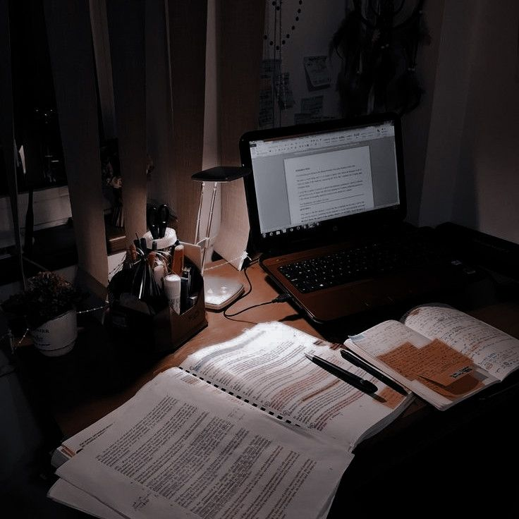

Un pats galvenais laika plānošanas un uzdevumu veikšanas ieteikums - izvērtē, vai tev to vispār vajag? Vai tu to dari tapēc, ka tā ir jādara? Kurš no tā iegūs? Varbūt, ka ir lietas tavās ieplānotajās darbībās, kuras nemaz nav nepieciešamas. Nedari lietas, kas nav efektīvas.